desktop_windowsConfiguración del sistema
Idiomas
To translate with Crowdin, you have to login Crowdin and restart TheDesk when login is finished.日本語EnglishCrowdin translate system(beta)българскиČeskyDeutschSpanish, Argentina
Importación y exportación de la configuración
Tipografía
Seleccioná tu tipografía favorita (sólo para Windows y macOS)Carpeta para guardar
TheDesk usa esta configuración para guardar imágenes en general y capturas de pantallas.
color_lensTemas
Seleccionar tema
Editar y agregar temas personalizados
Nombre
Acerca de este tema
Esquema de colores
Primary
Fondo de componentesSecondary
Color de fondoTexts
Color del textoAccent
Fondo de retootsCompartí este código con otros usuarios de TheDesk. No se comparte este código en MiAS.
Importación de temas personalizados
Obtené más temas enMiAS
reorderConfiguración de la línea temporal
{{item.text.head}}
{{textbox.text.after}} {{item.text.after}}
Sonido personalizado
Volumen
0-100 (predeterminado: 80)80
sendConfiguración de entradas
{{item.text.head}}
{{check.kirishimaText}} {{textbox.text.after}} {{item.text.after}}
keyboardConfiguración de atajos del teclado
Inserción fácil
Podés insertar cualquier letra y emoji con sólo 3 teclasCtrl+Shift+1:
Ctrl+Shift+2:
Ctrl+Shift+3:
bookmarkConfiguración de silenciado y resaltado
Silenciado de usuario
Resaltado de usuario
Hacé clic en el nombre de los toots para cambiar entre silenciado y resaltado.Palabras silenciadas
Establecer con la tecla \"Intro\"Resaltado de palabras
Establecer con la tecla \"Intro\"Resaltado de usuario
Establecer según usuario. Usar este color para resaltar
Configuración de Spotify y \"Ahora suena\"
Hacé clic en el ícono music_notepara mostrar \"Ahora suena\"
Conexión de cuenta
TheDesk guarda tus datos en el servidor thedesk.top.Conectar Desconectar
@@templateedit@@
@@templateeditwarn@@@@template1@@
@@template2@@
@@template3@@
Adjuntar tapa desde Spotify
hearingConfiguración de TTS (texto hablado)
Conectar BouyomiChan
Requiere: Plugin WebSocket de BouyomiChanGitHubVelocidad
1-100 (predeterminado:10)10
Tono
0-100 (predeterminado:50)50
Volumen
0-100 (predeterminado:100)100
Prueba
undoVolver
Atajos del teclado
以下Markdownに対応したインスタンスのみ。
- Ctrl+B/I/S/U:太字/斜字/取り消し/下線
以下アスタルテにログインしている場合のみ
- Ctrl+R:
アスタルテ暇人ランキングを開く
Al seleccionar un toot:- F:Marcar como favorito
- B:Retootear
- R:Responder a ese toot
Al seleccionar un toot:
webSitio web trending_upContribuciones (Pixiv FANBOX) trending_upContribuciones (Patreon) trending_upContribuciones (Liberapay) listAyuda/Docs GitHub Main author: Cutls@cutls.com
TheDesk @ 47c6454c00bec1d79ec0cd2fbd84cc97988f5c2b
Kyash

Buscar actualizaciones
OSS License
Copyright © TheDesk 2018 Under GNU General Public License v3.0 and Privacy Policy
TheDeskおよびCutls Pは被災地支援のためのマストドン研究会をログイン機能提供等の形で応援しています。
タグタイムラインを開く:#被災地支援のためのマストドン研究会